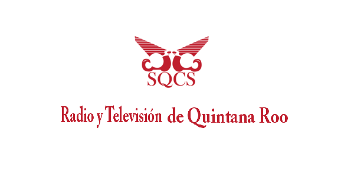

RadioUnicaribe
Los últimos programas grabados
No te pierdas nuestro último programa emitido.
Entérate que a través de este espacio jamás volverás a perderte de tus programas favoritos.
- Ki'T'aanilo'Ob
- RadioEscuchate
- Foro Abierto
- AlternoBeat

- Entrevistas
- Caribe más Caribe
- Espera los nuevos programas que traeremos para ti. 
- Los mejores eventos de la Universidad del Caribe traidos para ti.
- De interés.